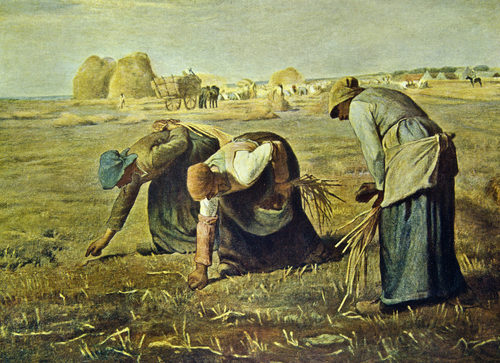
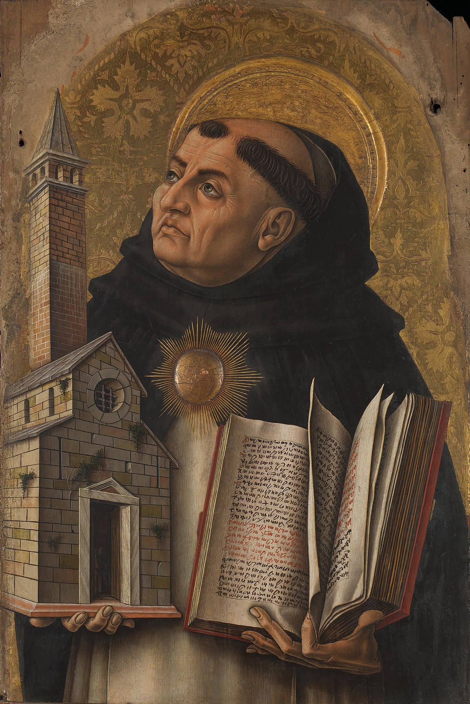
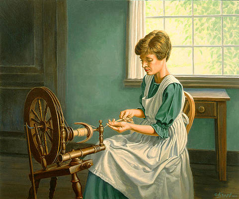
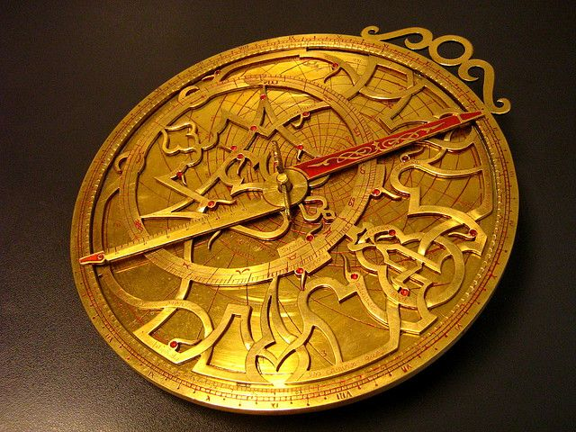
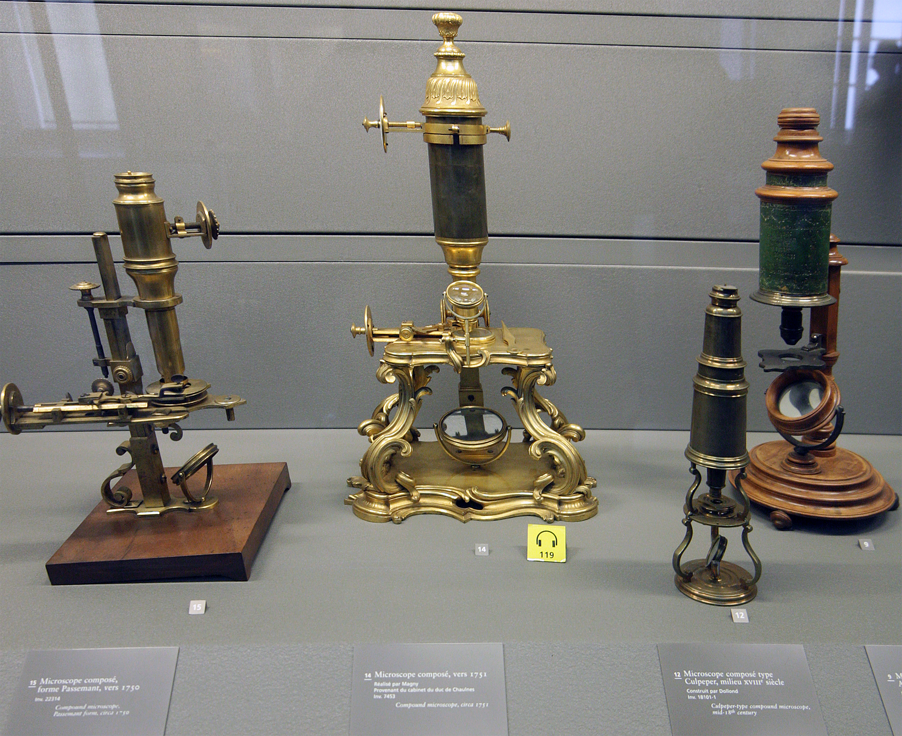
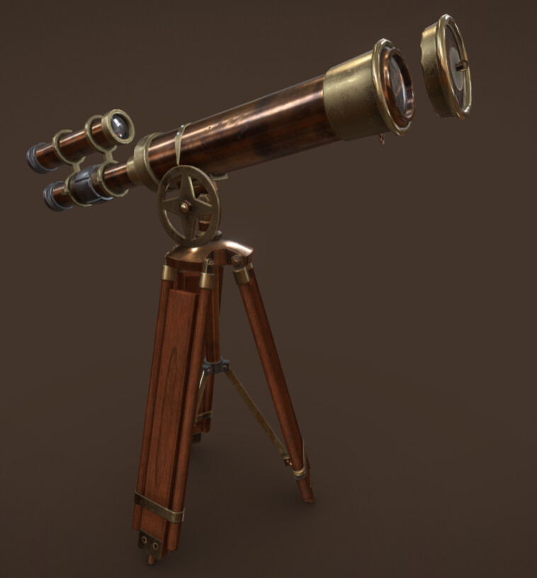

CATHOLIC CHURCH
After the accident of Rome, there was no single state or authority that brought the people of Europe
together. The Catholic Church, on the other hand, grew to be the most powerful institution of the
Middle Ages. The Church's relationships and protection provided a significant amount of influence to
kings, queens, and other leaders.
Do you want to learn more about the Catholic dominance in the society? Click the button below
to find out.
Catholic Churches
Related Information
-
Middle Ages

The early developments in the Middle Ages were strengthened with the trial to systemize education. Rulers and church leaders realized that education was the key to maintaining unity and peace.
-
Carolingian Renaissance

This period was known as the Carolingian Renaissance, a time when Charles the Great, often known as Charlemagne, tried to reestablish knowledge as a cornerstone of medieval society.
-
Golden Hero of the Church

Known for being the Golden Hero of the Church, he instigated a revival in art, culture, and learning, using the Catholic Church to transmit knowledge and education.
-
Catholic Church
After the accident of Rome, there was no single state or authority that brought the people of Europe together. The Catholic Church, on the other hand, grew to be the most powerful institution of the Middle Ages. The Church's relationships and protection provided a significant amount of influence to kings, queens, and other leaders.
-
St. Thomas Aquinas

St. Thomas Aquinas (1225 – 7 March 1274) was an Italian Dominican friar, Catholic priest, and Doctor of the Church. He was an immensely influential philosopher, theologian, and jurist in the tradition of scholasticism, within which he is also known as the Doctor Angelicus and the Doctor Communis.

ISLAM
The Islamic world, on the other hand, was expanding and becoming more powerful. Muslim troops conquered significant sections of the Middle East after the prophet Muhammad's death in 632 CE, bringing the region under the administration of a single caliph. The medieval Islamic world was more than three times the size of the entire Christian world at its height.
The Middle Period
INVENTIONS & CONTRIBUTIONS
-
Arts & Architecture
Building large cathedrals and other ecclesiastical institutions, such as monasteries, was another method to display a commitment to the Church. Cathedrals were medieval Europe's greatest structures, and they could be found in the heart of towns and cities all throughout the continent. Most European cathedrals were built in the Romanesque style between the 10th and 13th centuries. The roofs of Romanesque cathedrals are supported by rounded brick arches and barrel vaults, with strong stone walls and few openings.
-
Economics & Society
Rural life in medieval Europe was ruled by a system known as "feudalism" in which the monarch handed noblemen and bishops enormous swaths of territory known as fiefs. Serfs, or landless peasants, conducted the majority of the work on the fiefs, planting and harvesting crops and giving the majority of the output to the landlord. They were given permission to reside on the land in exchange for their labor. They were also assured of safety in the event of a hostile invasion.
-
Spinning Wheel

The spinning wheel's essential function is to combine and twist fibers together to form thread or yarn and then gather the twisted thread on a bobbin or stick so it may be used as yarn for the loom.
-
Stirrups
A stirrup is a light frame or ring that holds the foot of a rider, attached to the saddle by a strap. Stirrups are usually paired and are used to aid in mounting and as a support while using a riding animal
-
Eyeglasses
In the 13th century, people who suffered from nearsightedness or farsightedness had to give up reading and other eye-intensive activities because of the lack of a cure for the condition - there was no such thing as a cure at the time. Eyeglasses correct vision problems. They improve how clearly and sharply you see objects at any distance.
-
Astrolabe

Astrolabe is a device which is used for astronomical calculations. Astrolabes have been used by astronomers, navigators and astrologers since antiquity. It is also used for navigation by medieval naval vessels in the Mediterranean and Aegean seas.
-
Compass
A compass is a device which helps in recognizing the cardinal points of the Earth, namely North, South, East and West. It is important to the sailors, navigators, diviners and ecclesiastical authorities since the days of classical antiquity.
-
Tidal Mills
Tide Mills consisted of a dam with sluices, a retaining basin, and a float or a water wheel and transformed the energy of running water into mechanical power to run mills, breweries and sawmills. Tide mills became more common during the Middle Ages. A tide mill would have a storage pond which filled up as the tide came in. As the tide went out, the pond emptied and the moving water rotated a water wheel which transforms the energy of running water into mechanical power.
-
Printing Press
The Printing press was a new mode of printing texts and books which was invented by Johannes Gutenberg in the first half of the 15th century. Printing press allows mass production of uniform printed matter, mainly text in the form of books, pamphlets and newspapers.
-
Microscope

Zacharias Janssen developed the first compound microscope where people were able to observe organisms. It is a key in discovering new means in preventing and curing various illnesses
-
Telescope

The need for nautical inventions leads to the creation of the telescope. This helped Ship captains to see far and wide to navigate or avoid dangers at sea. With this the invention of the compass, oars, and rudders made sea travelling easier and safer.